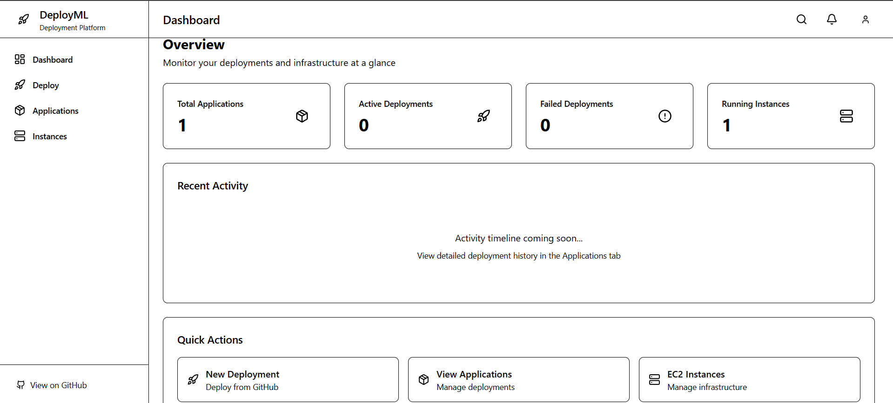
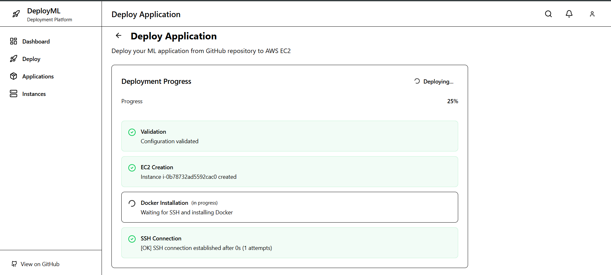
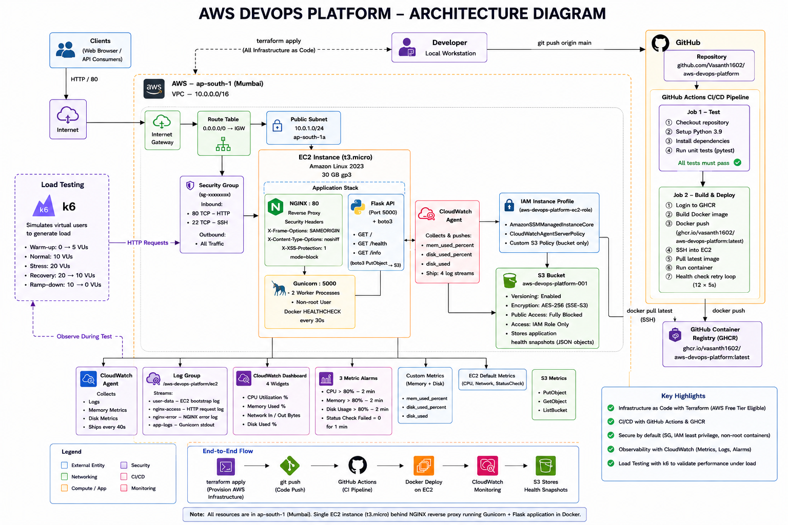
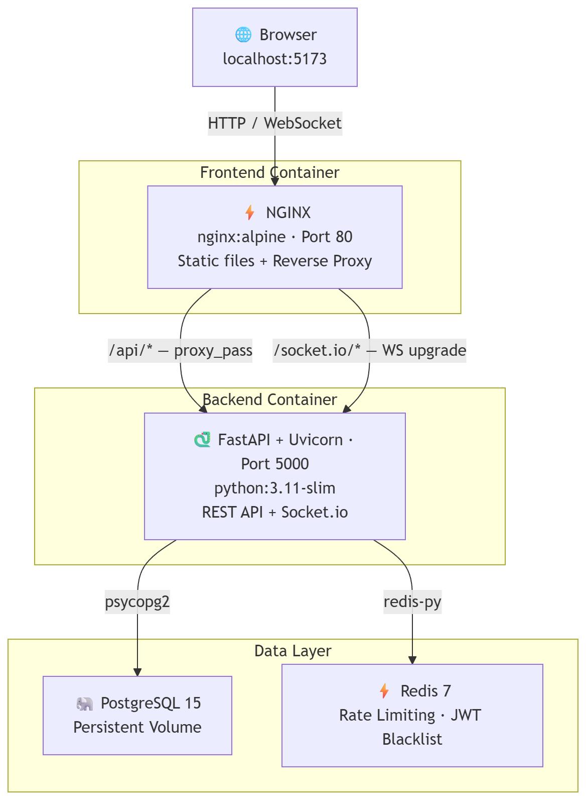

500. Frontend loaded.
GET /api/auth/me worked (JWT, no DB call). Redis rate limiting active. Container status
showed all containers "Up" — monitoring would have shown green while users saw 500s.
I build infrastructure, automate delivery,
and investigate what happens when systems fail.
Three systems, each built to understand something specific about infrastructure, delivery, and failure.
How do you turn a 30-minute manual AWS deployment workflow into a repeatable, automated platform?


A Terraform-based production architecture (CloudFront → ALB → ECS Fargate → RDS) is designed
and documented on the feature/aws-production branch. The current deployed
orchestration runs against EC2 using boto3 + Paramiko. The IaC design represents the next evolution, not
the current deployment.
A self-service platform that accepts a GitHub URL and deploys a live ML application on AWS EC2 through a 13-step orchestration pipeline. The backend coordinates EC2 provisioning, Docker deployment, NGINX configuration, and real-time status streaming over Socket.IO — all triggered by a single form submission.
The front end was built with React 19 + Vite. The orchestration layer uses boto3 for AWS provisioning and Paramiko for SSH-based remote execution. A PostgreSQL database tracks deployments and instance state.
What does a complete cloud-to-production engineering path look like — infrastructure, delivery, observability, and reliability testing in one project?
End-to-end cloud engineering: Terraform provisions the AWS stack from scratch. GitHub Actions handles build, test, push to GHCR, and SSH-based EC2 deployment. CloudWatch provides dashboards, alarms, log streams, and custom metrics. k6 validates reliability under load before the project was considered complete.

Current: SSH-based deployment from GitHub Actions. Simple, transparent, works for this
scope.
Known limitation: SSH keys in CI, no HTTPS,
single-instance.
Production path: AWS SSM Session Manager, ALB + ACM certificate,
Auto Scaling Group.
How do you learn DevOps from first principles — not from tutorials, but by deliberately breaking a real system and documenting what happens?
A full-stack voting platform built as a progressive DevOps project — containerized, proxied, and CI-validated across three phases. The platform uses FastAPI + React 18, PostgreSQL with AES-256 ballot encryption, Redis for rate limiting and JWT blacklisting, and Socket.IO for real-time vote streaming.
The engineering differentiator: six production failures were simulated on purpose. Each incident was reproduced, investigated in depth, documented with root cause and remediation, and used to improve the system. These are not hypothetical exercises — they are full incident reports based on real log output, real error messages, and real recovery steps.

500. Frontend loaded.
GET /api/auth/me worked (JWT, no DB call). Redis rate limiting active. Container status
showed all containers "Up" — monitoring would have shown green while users saw 500s.postgres became unresolvable — not "connection refused" but "no
address associated with hostname." The backend never attempts TCP; DNS fails first.200 OK without testing the database are liveness probes — not readiness probes. A green
health endpoint during a DB outage is actively misleading.502 Bad Gateway on every API call. PostgreSQL, Redis, NGINX, and frontend were
all fully healthy. Infrastructure was green; application was dead.DB_HOST=localhost set instead of
DB_HOST=postgres. Inside a Docker container, localhost resolves to the
container's own loopback (127.0.0.1). PostgreSQL was running in a separate network
namespace, reachable only by its service name. DNS succeeded; TCP was refused. Backend startup event
failed; Uvicorn exited.502 means dead upstream (check container state). 500 means broken upstream
(check application logs). The error code is the first debugging signal. --force-recreate
is required for env var changes — restart does not apply them.Upgrade and
Connection) before forwarding requests upstream. The browser sent a WebSocket upgrade
request; NGINX removed the headers; the backend received a plain HTTP request and refused the upgrade.
Fix: proxy_set_header Upgrade $http_upgrade; and proxy_http_version 1.1; in
NGINX config.docker build succeeded locally. The PR was blocked from merging.--no-cache in local dev to find hidden dependency issues before
CI does.branches: [main] to
branches: [production]. production does not exist as a branch. The YAML is
syntactically valid — GitHub parses it without error. The trigger simply never fires because no PR
ever targets a production branch.Principles I've developed from actually building and breaking these systems — not from theory.
Infrastructure that can't be reproduced isn't infrastructure — it's a configuration that happened to work once. Everything I provision starts with code: Terraform modules, docker-compose files, Dockerfiles with explicit layers.
Manual deployment steps accumulate hidden dependencies and silent assumptions. Each manual step is a future incident waiting to happen. Automating the full path — including health check gates — makes deployment safe to repeat.
A green pipeline proves the happy path works. It says nothing about what happens when Postgres stops, a config value is wrong, or a dependency fails on a cold build. VoteSecure exists specifically to answer those questions.
Fixing the problem is necessary. Understanding why it happened is what makes the system better. A root-cause analysis written after every incident — even a deliberate simulation — trains the instinct to think at the right layer.
A system is only as reliable as your ability to see what it's doing. CloudWatch dashboards, alarms, custom metrics, log streams, and k6 load tests aren't afterthoughts — they're how you verify the infrastructure you built actually works under real conditions.
SSH-based CI/CD is simpler than SSM. A single EC2 instance is cheaper than Auto Scaling. Single-request DB connections recover automatically but don't pool efficiently. Knowing the trade-off and naming it is more useful than pretending it doesn't exist.
Tools I've used in real projects — not listed because they look good on a resume.
Smaller projects and exercises that contributed to the DevOps / Cloud story.
Declarative Jenkins pipeline: Python virtualenv setup, unit tests, conditional branch-aware deployment, and automated PR merge via GitHub API using Groovy scripting.
AWS governance tool using boto3 to scan EC2, EBS, S3, RDS, EIP, Snapshots, ALB, and NAT Gateways across regions. 20+ deterministic rules, ranked cost-savings recommendations, CSV/JSON/HTML export.
Blue-green style deployment using filesystem symlinks and NGINX configuration reloads — no container orchestrator required. Demonstrates the mechanism behind zero-downtime at the OS level.
Deploy a static page to a local Kubernetes cluster using Deployment and Service manifests. Demonstrates pod scheduling, replica management, and service exposure fundamentals.
Open to DevOps, Cloud, and DevSecOps roles.
Also happy to talk infrastructure, incident analysis, or anything in this stack.